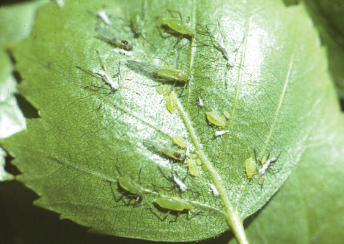

and the use of herbicides. The following cultural practices can be integrated for effective weed management in tomatoes:
(i)
Deep tillage and exposing soil to sunlight before transplanting help to destroy the weed seeds;
(ii)
Removal of any previous crop residues and using of sanitary practices to avoid introducing weed seeds;
(iii)
Keeping the field weed-free for 4 – 5 weeks after transplanting to suppress weed competition and avoid low crop yield;
(iv)
Regularly, practising hand weeding between plant rows;
(v)
Applying mulches which are free from weed seeds;
(vi)
Planting different crops on a field each season and repeating the same crop after at least three growing seasons (crop rotation).
This practice interrupts life cycles of pathogens and pests of the crop.
Management of pests and diseases in tomatoes
Tomatoes can be harmed by several pests and diseases. It is important to know what they are and how they harm the crop. You also need to know how to deal with them. The following are some of them.
Aphids
What they do: Feed on tomato plants’ sap, causing leaf curling, yellowing and transmission of plant viruses.
How to identify them: Look for tiny, soft-bodied insects on the underside of leaves (refer to Figure 8.6).
How to manage them: Spray a solution of soap, cow or rabbit urine to affected plants; intercropping with other crops; use recommended pesticides.
